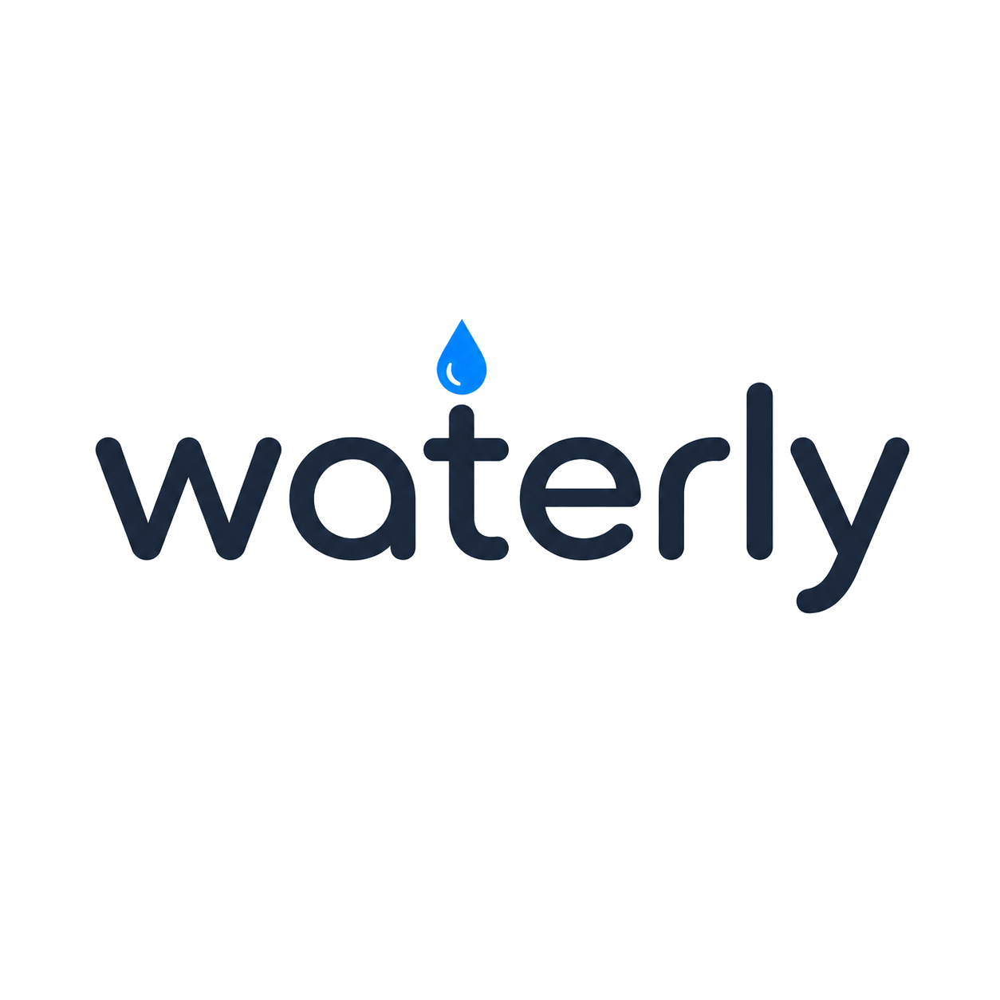
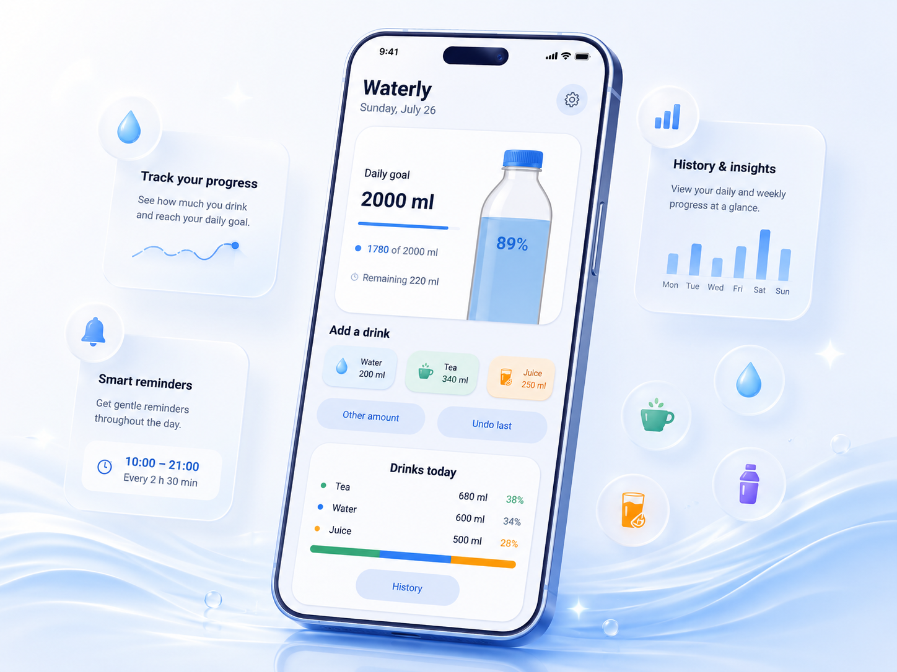
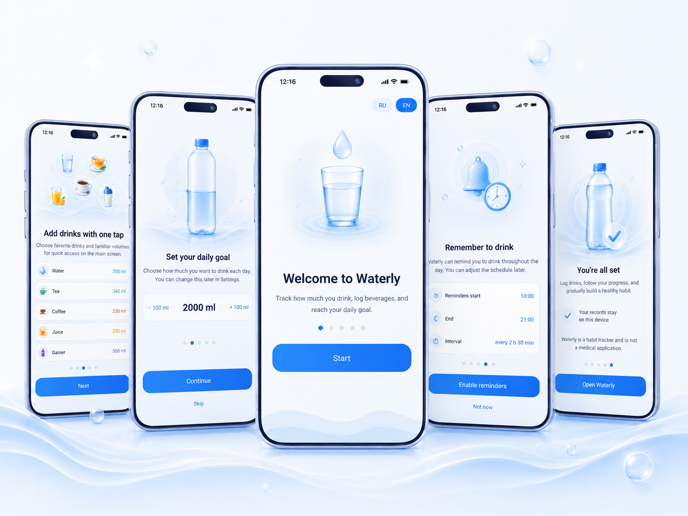

Локальное хранение
Записи и настройки Waterly 1.0 остаются на вашем устройстве.

Легче следить за водным балансом
Waterly помогает добавлять напитки, следить за личной дневной целью, настраивать спокойные напоминания и видеть прогресс без лишней сложности.

Записи и настройки Waterly 1.0 остаются на вашем устройстве.
Без рекламы, аналитики посетителей, cookies и поведенческого отслеживания.
Основные функции трекера доступны без подключения к интернету.

Установите дневную цель, добавляйте привычные напитки одним нажатием, настраивайте локальные напоминания и просматривайте историю в чистом двуязычном интерфейсе. Регистрация не требуется.
Только для учёта привычек. Waterly не является медицинским изделием, не предоставляет медицинских рекомендаций и не предназначено для диагностики, лечения, профилактики или излечения заболеваний.
Revol Apps
Настоящая Политика конфиденциальности объясняет, как мобильное приложение Waterly («Waterly», «приложение») обрабатывает информацию при использовании приложения.
Waterly предназначено для личного учёта потребления жидкости, настройки дневной цели, напоминаний и просмотра истории записей.
Waterly не является медицинским изделием и не предоставляет медицинских рекомендаций. Приложение не предназначено для диагностики, лечения, профилактики или излечения заболеваний и иных медицинских состояний.
Waterly обрабатывает информацию, которую пользователь самостоятельно вводит или настраивает в приложении, в том числе:
В Waterly 1.0 перечисленные выше данные хранятся локально на устройстве пользователя.
Waterly не требует создания учётной записи.
Waterly не использует собственный облачный сервис для синхронизации записей о напитках или настроек приложения.
Waterly 1.0 не содержит рекламных SDK.
Waterly 1.0 не использует SDK аналитики, телеметрии, атрибуции, crash reporting, рекламы или поведенческого отслеживания.
Waterly не продаёт пользовательские данные рекламодателям.
Waterly 1.0 не запрашивает Android-разрешение INTERNET и не содержит встроенного сетевого клиента для передачи записей о напитках или настроек приложения.
Само приложение Waterly не загружает записи пользователя или настройки приложения ни на какой сервер.
Однако некоторые действия, инициированные самим пользователем, могут открывать другое приложение на устройстве или передавать ему информацию. Такие внешние приложения работают в соответствии со своими собственными политиками конфиденциальности.
Waterly может запросить разрешение на отправку уведомлений, чтобы показывать локальные напоминания.
Waterly также использует Android-разрешение, необходимое для восстановления расписания локальных напоминаний после перезагрузки устройства.
В release-версии Waterly 1.0 используются только:
POST_NOTIFICATIONS — для показа локальных напоминаний на поддерживаемых версиях Android;RECEIVE_BOOT_COMPLETED — для восстановления расписания локальных напоминаний после перезагрузки устройства.Waterly 1.0 не запрашивает разрешения на геолокацию, контакты, камеру, микрофон, телефонные вызовы, SMS, общее хранилище или рекламный идентификатор.
Waterly позволяет пользователю экспортировать данные в формате CSV через системное меню Android «Поделиться».
Экспорт выполняется только после явного действия пользователя.
Когда пользователь выбирает другое приложение или сервис в системном меню «Поделиться», экспортированные данные могут покинуть устройство и обрабатываться выбранным приложением или сервисом.
Revol Apps не контролирует обработку экспортированных данных сторонними приложениями, выбранными пользователем. Рекомендуется ознакомиться с политикой конфиденциальности выбранного приложения или сервиса.
Waterly может открывать Политику конфиденциальности во внешнем браузере.
Waterly также может открывать почтовое приложение устройства, если пользователь выбирает связь с разработчиком.
Браузер, почтовое приложение и другие внешние приложения могут обрабатывать информацию в соответствии со своими собственными политиками конфиденциальности.
Waterly 1.0 отключает резервное копирование данных приложения средствами Android и исключает хранилища Waterly из правил облачного резервного копирования и переноса данных между устройствами, заданных самим приложением.
Это не распространяется на копии, которые пользователь создаёт самостоятельно, а также на инструменты и способы резервного копирования, находящиеся вне контроля Waterly.
Пользователь может удалять записи о напитках с помощью функций Waterly.
Поскольку Waterly 1.0 хранит данные приложения локально, удаление Waterly с устройства удаляет локальные данные приложения в соответствии с поведением Android, за исключением копий, которые пользователь ранее экспортировал или создал вне приложения.
Waterly 1.0 не содержит сторонних SDK для рекламы, аналитики, crash reporting, авторизации, платежей, облачного хранения или телеметрии.
Если пользователь открывает браузер, почтовое приложение или передаёт экспортированные данные другому приложению, соответствующая третья сторона может обрабатывать информацию независимо от Waterly.
Waterly не предназначено специально для сбора персональной информации детей.
Waterly 1.0 не требует регистрации аккаунта и при обычном использовании не просит пользователя указывать имя или адрес электронной почты.
Waterly разработано с целью минимизировать объём обрабатываемых данных и по возможности хранить записи приложения локально на устройстве пользователя.
Безопасность локально хранящейся информации также зависит от защищённости устройства пользователя и приложений или сервисов, которым пользователь самостоятельно передаёт экспортированные данные.
Настоящая Политика конфиденциальности может обновляться при изменении функций Waterly, разрешений, способов обработки данных или сторонних интеграций.
Если в будущих версиях будут добавлены реклама, аналитика, облачная синхронизация, аккаунты или другие сервисы обработки данных, настоящая Политика будет обновлена соответственно до выпуска такой версии или одновременно с ним.
Актуальная версия Политики конфиденциальности будет доступна по адресу:
Разработчик Waterly — Revol Apps.
По вопросам конфиденциальности:
Email: 2revol@protonmail.com